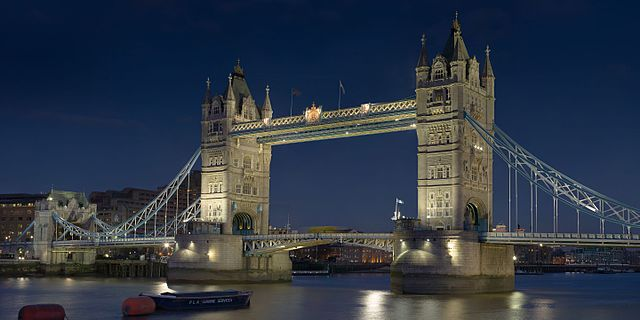

Tower Bridge is a landmark in London and sits on the river Thames. It took 8 years and 432 construction workers to build the bridge. Tower Bridge has a high level walkway that allows people to walk above the cars, and 40,000 people cross the bridge everyday.
